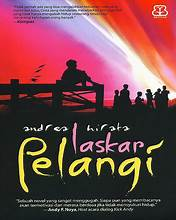
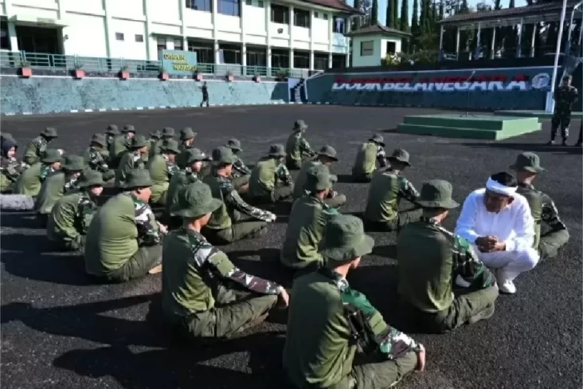
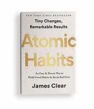

📖 Rekomendasi Bacaan

📘 Novel: "Laskar Pelangi"
Karya Andrea Hirata yang mengisahkan perjuangan pendidikan anak-anak Belitung.

📰 Berita Terkini
Wacana barak militer untuk anak nakal memicu diskusi publik dan kritik dari JPPI.

💡 Buku Best Seller: "Atomic Habits"
Panduan membentuk kebiasaan positif yang ditulis oleh James Clear.